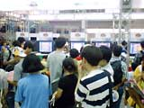
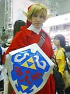
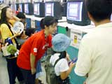
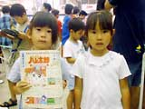
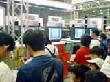
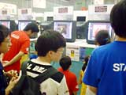
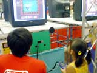

| #7 ゲームボーイカラー体験コーナー(任天堂) その２ |
| ●ゼルダの伝説 ふしぎの木の実 大地の章（仮称） 12月発売予定 |
| 任天堂＆カプコン共同制作、「ゼルダの伝説」最新作が、いよいよお披露目となりました。ファンが待ちわびた一作ということで、体験コーナーは大盛況。開場と同時に足を運んでくれた人も多いようです。 ゲームボーイカラー専用ということで、デモグラフィックなどにもかなり力が入っていますし、シナリオのほうもかなりボリュームがありそう。5分の体験プレーでは雰囲気を味わっていただくのが精一杯だと思いますが、本編の方は、やはり発売後の楽しみということで、ご了承下さいね。 |
| それから、今回は展示されていませんが、今後発売予定の「ゼルダの伝説 ふしぎの木の実 天空の章（仮称）」とあわせて遊べるリンクシステムも搭載されていますので、そちらのほうも、今から楽しみにしていてください。 そうそう、去年に引き続き遊びに来てくれた"リンク"お姉さんも、体験コーナーに並ばれてました。今年も子供達に囲まれてますが（笑）、大好きなリンクの冒険をぜひ楽しんでいってください。 |
| ●とっとこハム太郎 ともだち大作戦でちゅ 9月8日発売予定 |
| かわいいかわいいハムスターのハム太郎。このゲームでは、きみだけのハム太郎に会うことが出来ます。毎日いっしょに遊んだり、お世話したりして、一番のお友達になってあげてください。 TVアニメがスタートしたこともあり、1時間以上の待ち時間にもかかわらず、体験コーナーには小さな女の子のファンがたくさん並ばれてました。 |
| お母さんと一緒に並んでいた咲希ちゃんと美波ちゃんも、ハム太郎が大好きなお友達どうし。とくに咲希ちゃんはアニメの大ファンだそうですが、そのハム太郎にゲームのなかで会えるということで、順番がくるのを待ち遠しそうにしています。ソフトの発売はもうすぐだから、ぜひ、お家でもハム太郎と遊んであげてね。 |
| ●テニスGBカラー（仮称） 11月発売予定 |
| 簡単操作で、ショットやラリーといったテニスの醍醐味を存分に味わえる、ゲームボーイカラー専用のテニスゲームです。ライバルたちと試合を重ねていくことで様々なテクニックを身につけることができるので、上達すればするほど試合の駆け引きや楽しさが増すようになっています。 また、プレイをすることで得られる経験値を使ってキャラクターを育てることもできるし、64GBパックを使用すれば、育てたキャラクターを「マリオテニス64」に持っていったり、逆に「マリオテニス64」のキャラクターを「テニスGBカラー」に持ってくることもできるそうですよ。 体験コーナーも盛況で、子供から大人まで、幅広い年齢層にウケていました。「今一番アツいスポーツゲームは、テニスっすよ！」とプレー後の感想（？）を言い残してすぐに去っていった君、会場内では走らないでくださ〜い。 |
| ●モンスタータクティクス 12月発売予定 |
| ダンジョンにもぐり、誰が一番でっかいモンスターを倒せるか、を競うモンスターハンティング大会。プレイヤーは主人公のケビンとして、その大会に参加します。 このゲームの魅力は、"かくれんぼバトル"というシステムにあります。限られた視界しかないダンジョンのなかをうろつきながら、より強いモンスターを倒してください。モンスターを倒すと証拠のモンタクが手に入り、主人公はそのモンタクから取り出したモンタクスキルを使ってパワーアップします。パワーアップを繰り返して、より大きなモンタクをゲットしてね。とれたモンタクを、友達とくらべっこすることもできるようですよ。 |
| 体験コーナーで遊ぶ子供達の中には、その斬新なシステムにちょっととまどっている子もいましたが、そんなときはスタッフの方が付きっきりで説明していました。せっかく並んでくれたんですから、楽しんでもらいたいですもんね。 |
|
|